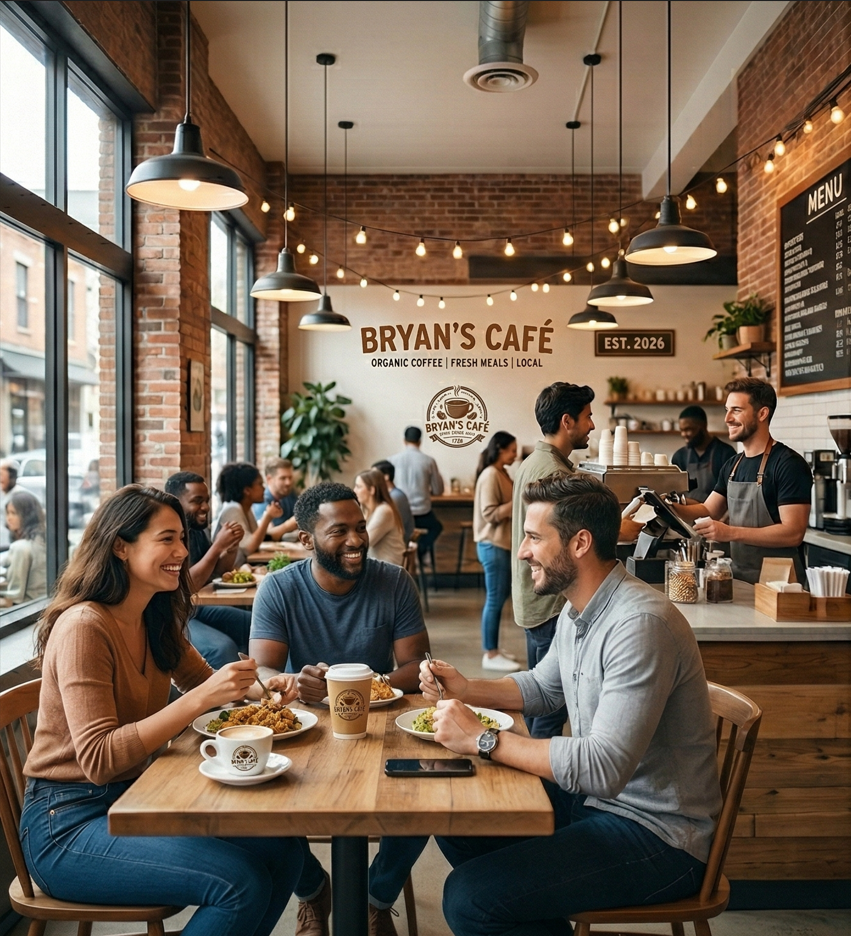
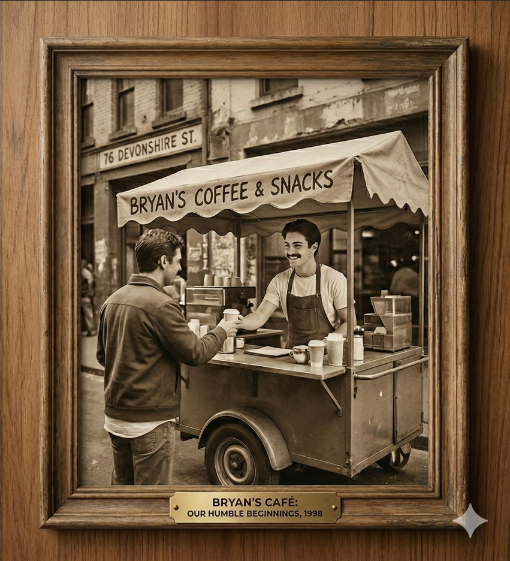

ABOUT
Welcome to Bryan’s Café, your local spot for fresh meals and organic coffee. We pride ourselves on using locally sourced ingredients to create a menu that is both delicious and healthy.

HISTORY
Established with a passion for community, Bryan’s Café started as a small coffee cart and has grown into three vibrant branches across Sydney. Our mission remains the same: great food, great people.
